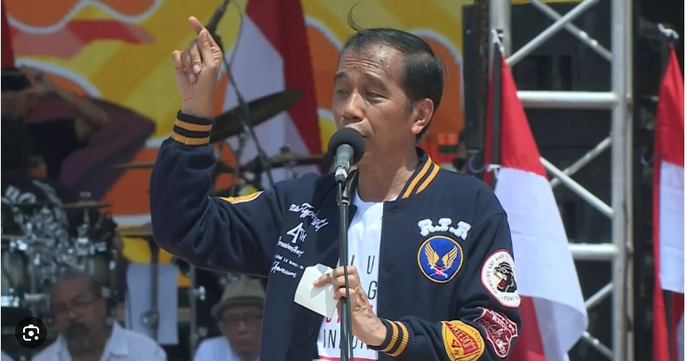

Joko Widodo (Indonesia: [dʒɔkɔ widɔdɔ]; lahir 21 Juni 1961), lebih dikenal sebagai Jokowi adalah politikus dan pengusaha Indonesia yang menjabat sebagai Presiden Indonesia ketujuh dari tahun 2014 sampai 2024. Sebelumnya ia adalah anggota Partai Demokrasi Indonesia Perjuangan (PDI-P). Ia adalah presiden Indonesia pertama yang bukan berasal dari elit politik atau militer dan menjadi presiden Indonesia pertama yang sebelumnya menjabat sebagai kepala daerah, di mana ia menjabat sebagai Gubernur DKI Jakarta dari tahun 2012 hingga 2014 dan Wali kota Kota Surakarta dari tahun 2005 hingga 2012. Jokowi lahir dengan nama Mulyono, yang kemudian diganti menjadi "Joko Widodo" karena namanya dianggap sebagai penyebab dirinya sakit-sakitan saat kecil.[8] Ia lahir dan besar di tepi sungai daerah kumuh di Surakarta. Jokowi menempuh pendidikan dan lulus dari Universitas Gadjah Mada pada tahun 1985, kemudian menikah dengan istrinya, Iriana, setahun kemudian.[9][10] Ia bekerja sebagai tukang kayu dan eksportir furnitur sebelum terpilih sebagai Wali Kota Surakarta pada tahun 2005.[11][12] Ia menjadi terkenal secara nasional sebagai wali kota dan terpilih sebagai gubernur Jakarta dalam pemilihan umum tahun 2012,[13] bersama Basuki Tjahaja Purnama sebagai wakil gubernur.[14][15] Sebagai gubernur, ia menghidupkan kembali politik lokal, memperkenalkan kunjungan blusukan yang dipublikasikan (pemeriksaan mendadak)[16] dan memperbaiki birokrasi kota, mengurangi korupsi dalam prosesnya. Ia juga memperkenalkan program-program yang sudah berjalan bertahun-tahun untuk meningkatkan kualitas hidup, termasuk layanan kesehatan universal, mengeruk sungai utama kota untuk mengurangi banjir, dan meresmikan pembangunan sistem kereta bawah tanah kota.[17] Pada tahun 2014, Jokowi dicalonkan sebagai calon dari PDI-P pada pemilihan umum presiden tahun itu,[18] memilih Jusuf Kalla sebagai cawapresnya. Jokowi terpilih atas lawannya, Prabowo Subianto, yang membantah hasil pemilu. Jokowi kemudian dilantik pada tanggal 20 Oktober 2014.[19][20] Selama menjabat, Jokowi fokus pada pertumbuhan ekonomi dan pembangunan infrastruktur serta agenda ambisius kesehatan dan pendidikan.[21] Dalam politik luar negeri, pemerintahannya menekankan “melindungi kedaulatan Indonesia”,[22] dengan menenggelamkan kapal ikan asing ilegal[23] dan penentuan prioritas dan penjadwalan hukuman mati bagi penyelundup narkoba. Hal terakhir ini terjadi meskipun terdapat protes diplomatik dari negara-negara asing, termasuk Australia dan Prancis.[24][25] Ia terpilih kembali pada tahun 2019 untuk masa jabatan lima tahun kedua, sekali lagi mengalahkan Prabowo Subianto.[26] Namun, menjelang akhir masa jabatan presiden keduanya, hubungannya dengan PDI-P memburuk karena ia mendukung Prabowo Subianto, yang sebelumnya merupakan rival politiknya, untuk kampanye presiden 2024, dan mengesampingkan calon presiden dari partainya sendiri, Ganjar Pranowo. Putra sulung Jokowi, Gibran Rakabuming Raka, bahkan mencalonkan diri sebagai calon wakil presiden Prabowo.[27] Pada tanggal 22 April 2024, setelah penolakan Mahkamah Konstitusi atas segala tuntutan dan perselisihan terkait pilpres 2024, Dewan Kehormatan PDI-P menyatakan baik Jokowi maupun Gibran tidak lagi menjadi anggota PDI-P,[28][29] dan dengan demikian, mengukuhkan pemisahan mereka dari PDI-P. Meski begitu, dalam pemberhentiannya, Jokowi dan Gibran masih diperbolehkan mempertahankan kartu anggotanya, karena PDI-P tetap menghormati mereka masing-masing sebagai presiden yang sedang menjabat/berkeluar dan wakil presiden terpilih. Pada tanggal 16 Desember 2024, PDI-P resmi mengumumkan pemecatan Jokowi sebagai kader partai.[4]